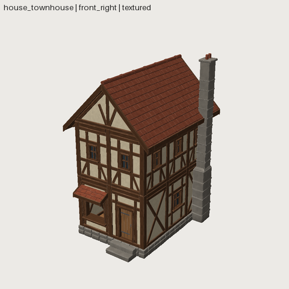

A modular kit and buildings made from it
The flagship example is the cozy_house kit: 26 modules (walls, posts, floors, roof pieces, openings, chimney) and 3 demo houses. It was built as an acceptance test (MODULAR_HOUSE_PACK_01) and then rebuilt with Phase 19 composition.

The pattern
- A pack is the single source of truth.
packs/cozy_house.yamlholds the grid (bay2 m), the storey height, the timber sections, the opening sizes, the roof pitch and the 7 shared materials. These are read-only in every member, so modules cannot drift apart. - Components are the construction.
house_wall(plates, studs, braces, plaster with openings, depth ranks),house_roof,house_timber, … - Module assets are small assets made of 1–3 component instances. Each one exports as a GLB and is reviewed on its own.
- Buildings instance module assets and place each one by its origin with grid arithmetic:
# file: assets/shed/asset.yaml
shapewright: 0.1
pack: cozy_house
asset: {name: shed, kind: environment/building, description: A one-bay shed from cozy_house module assets.}
budget: {triangles: 12000, materials: 7}
params:
y_wall: base_h - sink
parts:
footing_fb: {asset: house_footing, position: [0, 0, bay / 2], array: {count: 2, offset: [0, 0, -bay]}}
corner: {asset: house_corner, position: [-bay / 2, 0, bay / 2], array: [{count: 2, offset: [bay, 0, 0]}, {count: 2, offset: [0, 0, -bay]}]}
deck: {asset: house_floor, position: [0, base_h - floor_t, 0]}
front: {asset: house_wall_door, position: [0, y_wall, bay / 2]}
back: {asset: house_wall_window, with: {shutters: 0}, rotate: [0, 180, 0], position: [0, y_wall, -bay / 2]}
sides: {asset: house_wall_plain, rotate: [0, 90, 0], position: [-bay / 2, y_wall, 0], array: {count: 2, offset: [bay, 0, 0]}}
# run
sw validate shed
What keeps a kit honest
- Grid rule, no hand offsets. A post stands on every grid node, and a wall fills the span between two posts. Walls and posts start
sinkbelow the deck top, so they are always embedded and never touching exactly. - Measured placement. Pieces that hang on other pieces use
measure:. The shutters sit on the measured stud face, not on a typed depth. - Seams. The
seamsvalidator flags coplanar same-facing overlaps between parts (z-fighting), which every other check passes. The first cottage had 6 visible ones. - Stress test. Change
bay,storey,timber,postandpitchin the pack and rebuild. All three houses re-flow with no edits.
Read the full record: MODULAR_HOUSE_PACK_01.